SPAM Haiku Archive Awards

 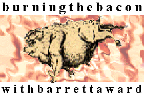
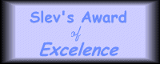
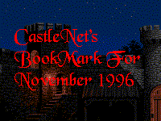
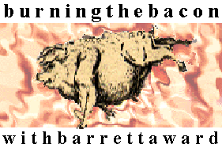
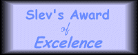
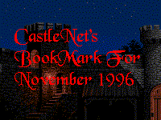
 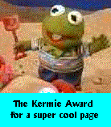
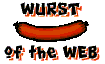
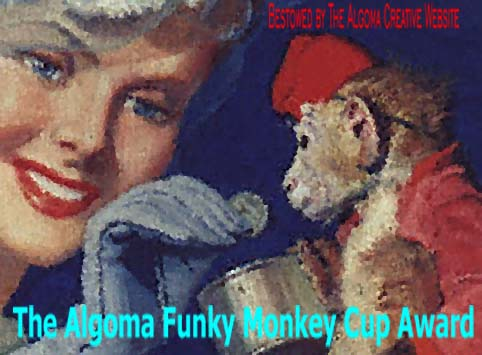
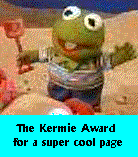
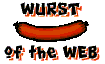
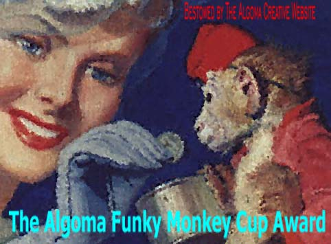
 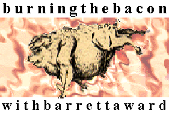
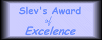
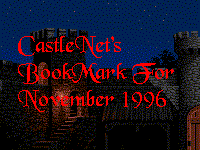
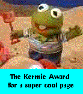
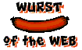
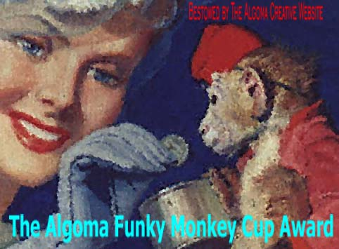
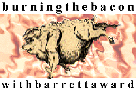
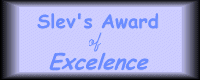
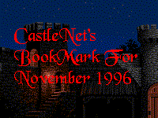
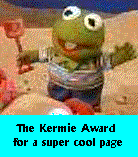
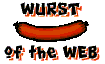
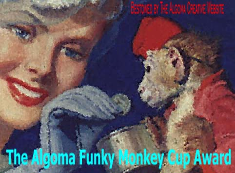
Return to the SPAM Haiku Archive Home Page.
Submit a spamku to the archive.
For the technically ambitious: SPAM sonnets.
For the rhythm freak: SPAM limericks.
Other SPAM poetic forms.
To my Editorial Haiku page.
The SHAM's fiction writing.
The SHAM's travel writing.
The SHAM's World Music articles.
John Nagamichi Cho, SPAM Haiku Archive Master (SHAM) /